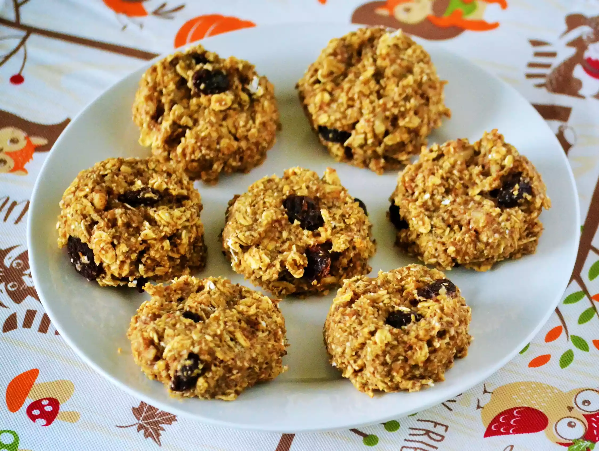

Oatmeal Breakfast Cookies
A low-sugar cookie for breakfast on the go. I like to make several portions of the dry ingredients all at one time and store in plastic bags for easy assembly when needed. Store in the refrigerator.
Recipe by DYEH

| Prep Time: |
Cook Time: |
Total Time: |
| 15 mins |
14 mins |
29 mins |
| Servings: |
Yield: |
| 24 |
24 Cookies |
Ingredients
- 3 ¼ cups old-fashioned oats, divided
- ½ cup chopped walnuts
- ⅓ cup raisins
- 2 tablespoons ground flax seeds
- 1 teaspoon ground cinnamon
- ¼ teaspoon baking powder
- ¼ teaspoon salt
- 2 ripe bananas
- 2 eggs
- ⅓ cup unsweetened applesauce
- 1 tablespoon honey
- 1 tablespoon vanilla extract
Recipe instruction
- Preheat the oven to 350 degrees F (175 degrees C). Line 2 baking sheets with parchment paper.
- Grind 2 1/4 cups oats in a food processor to yield 2 cups ground oats.
Add walnuts, raisins, flax seeds, cinnamon, baking powder, and salt.
Stir in remaining 1 cup oats. Stir thoroughly with a spoon, but do not grind further.
- Make a well in the center of the oat mixture. Add bananas, eggs, applesauce,
honey, and vanilla extract. Mash together and stir in oat mixture.
Drop tablespoonfuls of the cookie dough on the baking sheets.
- Bake in the preheated oven until edges are set, about 14 minutes.
Back to top of page Homepage